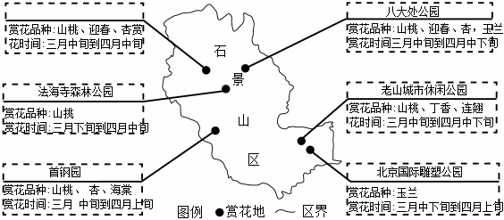
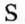
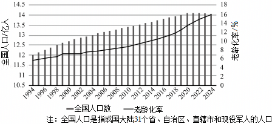
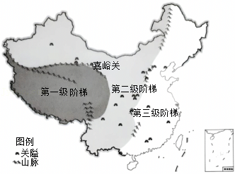

2025年北京市石景山区中考地理试卷 · 选择题 第1、2、3、4、5题
春天的石景山繁花锦簇。图1为石景山区赏花地图。读图，完成第1～3题。

1．赏花的最佳天气是（ ）
A．B．C．

D．2．在石景山赏花（ ）
①大部分赏花地可以欣赏山桃
②可在北京国际雕塑公园欣赏玉兰
③三月中旬到四月中下旬是赏花最佳时间
④八大处公园赏完迎春后可北上至首钢园赏海棠
A．①②③B．①②④C．①③④D．②③④
3．生活在石景山，我们可以“春赏花、夏纳凉、秋观景、冬嬉雪”，主要是由于（ ）
A．海陆分布B．地处热带C．地球运动D．地球形状
我国在2025年《政府工作报告》中提出，积极应对人口老龄化，大力发展“银发经济”。如图为我国1994年～2024年全国人口数量和老龄化率（年龄65岁及以上人口占总人口的比重）统计图。读图，完成第4、5题。

4．读图可知，我国近30年的人口变化趋势是（ ）
A．人口总数持续增长B．人口增速不断加快
C．人口分布日趋均衡D．老龄化率整体上升
5．“银发经济”是指以服务老年人为主的产业，“银发经济”的崛起将带动的行业是（ ）
A．户外运动和网络直播B．医疗保健和养老服务
C．汽车销售和服装制造D．休闲娱乐和仓储物流
“一夫当关，万夫莫开”。如图为我国古代22个重要关隘分布图。读图，完成第6、7题。
